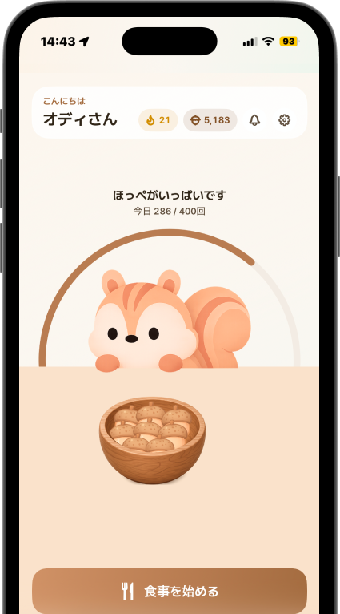

一食ごとに、現金が貯まります
食べているあいだに、
お金が貯まる。

どんぐり1個 = 1円
AirPodsをつけて、いつもどおり食べるだけ。噛んだ回数がそのままどんぐり、1個1円で口座へ。

LINE友だち追加限定
限定ごはん皿スキン
いま追加した
人だけ
人だけ
いくら貯まるかというと。

オディ
こんにちは、リスのオディです。噛んだ回数を数えて、お金に変えるね。
一食でどれくらいになるの？
オディ
一食でだいたい80円、よく噛めば120円まで。三食そろえば1か月で約2,400円だよ。
現金まで3ステップ。
アプリを見張らなくても自動で貯まります
01
つけて食べる
お手持ちのAirPodsをつければ自動で貯まりはじめます。追加で買うデバイスはありません。
02
よく噛む
1回噛むごとに1どんぐり＝1円。ゆっくり長く噛むほど金額が増えます。
03
現金で受け取る
どんぐり1個は1円。5,000どんぐりから本人名義の口座へ出金、手数料0円。
食べる速さで
もらえる金額が変わります。
もらえる金額が変わります。
同じ1食でも、ゆっくり長く噛むほど多くもらえます。
1日の上限は300どんぐり＝300円。
1日の上限は300どんぐり＝300円。
急いで食べた1日
45どんぐり
45円
ふつうの速さ
80どんぐり
80円
よく噛んだ1日
120どんぐり
120円
今週の獲得
555円
60
月
110
火
45
水
95
木
120
金
70
土
55
日
このペースなら1か月2,400円、
1年で28,800円。
1年で28,800円。
※ 獲得量は食事の習慣によって異なります
よくある質問
AirPodsだけでいいの？
はい。専用デバイスの購入は不要。お手持ちのAirPodsで噛んだ回数を数えます。
どんぐりはどう貯まるの？
噛んだ回数だけ貯まります。どんぐり1個は1円で、ゆっくり長く噛むほど多く貯まります。
現金の受け取り方は？
5,000どんぐりから本人名義の銀行口座へ出金。手数料は0円です。
今日の夕食から、
お金が貯まります。
お金が貯まります。
友だち追加は無料 · 30秒
※ AirPodsが必要です
※ 獲得量は食事の習慣によって異なります
利用規約 プライバシーポリシー お問い合わせ© 2026 Odi
LINE友だち追加限定 · ごはん皿スキンをプレゼント
LINEで友だち追加